| 项目 | 内容 |
|---|---|
| 项目名称 | 绿韵家App首页改版（本期范围：Banner轮播广告改造 + 分类导航改造 + 营销专区专题管理 + 猜你喜欢算法 + 后台配置） |
| 文档版本 | V1.17 |
| 创建日期 | 2026-08-14 |
| 文档状态 | 草稿 / 待评审 |
| 产品负责人 | ⚠️ 待确认 @产品负责人 |
| 技术Owner | ⚠️ 待确认 @研发负责人 |
| 测试负责人 | ⚠️ 待确认 @测试负责人 |
| 版本号 | 修订日期 | 修订人 | 修订内容简述 | 状态 |
|---|---|---|---|---|
| V1.0 | 2026-08-14 | PM | 初版：基于4张设计稿，误将顶部搜索框、购物车、Banner 一并写入本期需求 | 草稿 |
| V1.1 | 2026-08-14 | PM | 范围纠偏：搜索框/购物车/Banner 已有独立需求，移出本期；本期聚焦分类导航（写死→可配置）、超级品牌/爆款/特惠、猜你喜欢，并新增后台配置功能（分类导航配置、营销专区商品配置、推荐策略配置）；各模块补充跳转逻辑小节（待截图） | 草稿 |
| V1.2 | 2026-08-14 | PM | 补充分类导航跳转逻辑：根据4张落地页截图，确认新品上市/健康生活/自营专区/微生态专区4个入口的跳转目标与落地页结构；剩余惠民补贴/每日活动/精品推荐/更多4个入口待后续截图确认 | 草稿 |
| V1.3 | 2026-08-14 | PM | 继续补充分类导航跳转逻辑：根据新提供的5张截图，确认健康专区（健康生活页）、更多、每日活动、精品推荐4个入口；仅剩余惠民补贴1个入口待截图确认；新增对应落地页结构说明 | 草稿 |
| V1.4 | 2026-08-14 | PM | 分类导航8个入口跳转逻辑全部确认：根据惠民补贴落地页截图，补齐最后1个入口的跳转目标与落地页结构；待确认项#1标记为已完成 | 草稿 |
| V1.10 | 2026-08-14 | PM | 范围纠偏：分类导航为客户端写死展示、不可后台配置。删除 4.1.3 内"可配置"表述（配置字段表/功能细节/数据来源），4.2.2 改为"写死无后台配置"，并清理范围表、业务目标、参考原型表、验收标准、待确认项、附录中的交叉引用 | 草稿 |
| V1.13 | 2026-08-14 | PM | Banner 待确认项 B1~B7 全部确认：B1 无轮播时隐藏 Banner、分类导航上移；B2 自动轮播 3 秒、单张不轮播且隐藏指示器；B3 图片限制 1M/尺寸 1125×1440px 沿用现有规则；B4 允许扩展至其他广告位置；B5 复用现有广告生效时间/上下线状态；B6 跳转类型枚举复用现有广告功能；B7 埋点命名沿用现有规范。正文 4.1.2.2/4.1.2.3/4.1.2.4/4.1.2.5/4.2.1 相关待确认标记同步收敛为已确认 | 草稿 |
| V1.14 | 2026-08-14 | PM | 概念纠偏：超级品牌/超级爆款/限时特惠首页板块并非独立专题，而是展示"该专题里面的商品"；点击跳转该专题商品列表页（topic_id 传参），不再"聚合同类型所有专题"；展示数量不可后台配置、按设计图展示；限时特惠不展示倒计时；移除"广告位置扩展"三个独立选项（T3/T4）与 4.2.3.4 小节；相关待确认 #6/#7/#8/#9/#15/T3/T4/T6 收敛为已确认，AC7 改为区域隐藏 | 草稿 |
| V1.12 | 2026-08-14 | PM | 跳转逻辑纠偏：超级品牌/超级爆款/限时特惠首页卡片点击后跳转对应商品列表页（聚合展示同类型下所有商品），不再是专题详情页；4.1.4.6/4.1.5.6/4.1.6.6 各补充对应商品列表页截图 | 草稿 |
| V1.11 | 2026-08-14 | PM | 按产品要求调整营销专区字段规则：4.1.4/4.1.5/4.1.6 的模块标题与标签固定写死；专题名称/专题主图/当前价/划线价均取专题内最新加入商品的对应字段；后台创建超级品牌/超级爆款/限时特惠类型专题时无需填写专题名称/专题banner/首页推荐图/专题价；同步更新 4.2.3 后台字段说明与待确认项 #5、T5 | 草稿 |
| V1.5 | 2026-08-14 | PM | 补充后台配置功能参考：根据广告管理页面截图，明确后台配置采用列表+筛选+新增/编辑/删除的交互形式；根据更多页分栏说明截图，明确更多页分类tab沿用现有分栏、由后端返回但缺少配置功能 | 草稿 |
| V1.6 | 2026-08-14 | PM | 重新纳入Banner轮播区：根据前端需求标注与后台广告编辑页截图，明确后台广告管理新增"轮播广告"类型，首页顶部展示所有轮播广告类型的图片，按广告排序从小到大排列；调整4.1.x与4.2.x模块编号 | 草稿 |
| V1.7 | 2026-08-14 | PM | 营销专区改为后台"专题管理"：在专题管理新增"专题类型"字段，选项为超级品牌/超级爆款/限时特惠；广告位置增加"三个类型顶部"选项；前端三个营销专区按专题类型取专题数据并展示；点击跳转到对应专题详情页展示商品列表 | 草稿 |
| V1.8 | 2026-08-14 | PM | 补充"猜你喜欢"推荐算法方案：基于现有后台商品字段（运营类型、商品排序、商品标签、修改时间），在不改动后台的前提下，按"无浏览无购买/有浏览无购买/有浏览有购买"三类用户输出推荐与排序规则；排序以商品排序为主要依据，同排序按修改时间倒序 | 草稿 |
| V1.9 | 2026-08-14 | PM | 确认猜你喜欢算法参数：营销品运营类型集合固定写死不可后台增删；利润品判定=常规品兜底+利润品标签（标签可增删）；行为窗口30天、购买权重3倍确认；有购买记录用户过滤近7天已购；接口异常展示默认推荐列表；每页10条确认。待确认项#10、R1~R6 标记已完成 | 草稿 |
| V1.15 | 2026-08-17 | PM | 首页评审重构：① 营销专区保留三个固定板块位置，改为按"专题排序"返回第一个（置顶）+前两个共3个专题、每板块1个，新增"副标题"字段（≤5字）；② 猜你喜欢推荐算法整体重写为统一打分模型——商品按分层给基础分，叠加用户行为加分（加购/下单/收藏/三天内浏览），综合得分降序，商品排序仅作同分二次排序；基础分与行为加分权重先填默认值待算法 review；移除原三类用户策略与近7天已购过滤。同步更新 4.1.4~4.1.6、4.1.7.2~4.1.7.5/4.1.7.8、4.2.3、4.2.4、待确认项 #8/#12/#16 及埋点策略类型 | 草稿 |
| V1.16 | 2026-08-17 | PM | 专题结构与字段澄清（评审反问闭环）：① 营销专区三个固定板块各取对应专题类型的唯一专题（同类型仅允许存在 1 个，新建需先删旧）；专题卡片展示"专题名称 + 专题标签（≤5字，必填）"替换原"副标题（可选）"；② 统一打分模型"下单"加分口径确认为提交订单即计入（含未支付）。同步更新 4.1.4~4.1.6、4.1.7.4、4.2.3、4.2.4、待确认项 #23/#24/#25 收敛为已确认 | 草稿 |
| V1.17 | 2026-08-17 | PM | 专题标签"必填"范围收窄：仅专题类型=超级品牌/超级爆款/限时特惠时必填（≤5字），常规专题可选填；同步更新 4.1.4 统一数据规则、4.1.4~4.1.6 字段表、4.2.3.1/4.2.3.2、待确认项 #8/#24 | 草稿 |
绿韵家App是公司自营大健康商城的C端载体，首页承担流量分发与商品曝光的核心职能。当前首页的分类导航为写死展示、无后台配置能力、跳转逻辑缺失；营销内容（超级品牌/爆款/特惠）与个性化推荐（猜你喜欢）能力薄弱。本次改版以设计稿为基准：明确分类导航 8 个入口的写死跳转逻辑；新增超级品牌/超级爆款/限时特惠三大营销专区，由后台"专题管理"统一配置，新增"专题类型"字段区分三个板块；板块标题/标签写死，卡片展示字段取专题内最新商品；并上线基于新算法的"猜你喜欢"推荐流，以提升首页流量分发效率与重点商品曝光。
| 指标 | 口径 | 目标值 | 备注 |
|---|---|---|---|
| 分类导航点击率 | 分类导航入口点击UV / 首页访问UV | ⚠️ 待确认 @产品负责人 | 分入口统计 |
| 营销专区点击率 | （超级品牌+超级爆款+限时特惠）点击UV / 曝光UV | ⚠️ 待确认 @产品负责人 | 分模块统计 |
| 猜你喜欢点击率 | 猜你喜欢卡片点击UV / 曝光UV | ⚠️ 待确认 @产品负责人 | 按卡片位置下钻 |
| 首页→商详转化率 | 从首页进入商详的UV / 首页访问UV | ⚠️ 待确认 @产品负责人 | — |
| 端口 / 模块 | 顶部搜索框 | 购物车入口 | Banner | 分类导航 | 超级品牌/爆款/特惠 | 猜你喜欢 |
|---|---|---|---|---|---|---|
| App（iOS/Android） | 已有需求（不在本期） | 已有需求（不在本期） | 本期改造（新增轮播广告类型） | 保持写死，本期不改 | 本期新增（按专题类型展示） | 本期新增 |
| 运营后台 | — | — | 新增"轮播广告"类型配置 | 无后台配置（写死） | 本期新增"专题管理"模块（含专题类型字段） | 推荐策略配置 |
| 商品/库存系统 | — | — | — | 提供分类/商品数据 | 提供商品信息 | 提供推荐候选池 |
| 用户系统 | — | — | — | — | — | 提供用户画像 |
基线声明：本需求为首页展示与配置型需求，不涉及跨系统业务状态变更，因此未输出横向泳道全链路图。下图仅为用户在首页的行为路径示意，节点覆盖 Banner 轮播、分类导航、营销专区、猜你喜欢等本期模块（搜索框/购物车为既有模块，已有独立需求，本图仅作整体行为示意）。约束声明：禁止在PRD中自行简化/重绘/修改流程图，差异须报用户确认。
核心链路：用户打开App → 加载首页 → 浏览/点击本期模块 → 跳转对应落地页（分类页/商详/活动页等）。
| 层级 | 内容 | 说明 |
|---|---|---|
| 前端展示层 | 首页：Banner轮播（本期改造）、分类导航（本期改造）、超级品牌/爆款/特惠、猜你喜欢瀑布流 | App原生页面（iOS/Android）；搜索框/购物车为既有模块 |
| 后端配置层 | 轮播广告配置、专题管理（含超级品牌/超级爆款/限时特惠专题类型）、推荐策略配置 | ⚠️ 本期需新增/扩展运营后台配置能力（详见 4.2） |
| 数据层 | 商品主数据、价格/库存、用户画像、推荐候选池、分类配置 | 分别取商品系统、用户系统、推荐服务、配置服务 |
本需求以首页展示、跳转与后台配置为主，不涉及订单、券、活动等实体的状态变更，因此不单独输出状态流转表。若后续在营销专区中涉及"活动上线/下线/预热"等状态，将另起PRD补充。
需求影响范围：本期改动首页 Banner 轮播区与下半部分（分类导航 → 猜你喜欢）。Banner 轮播区本期改造为可配置轮播广告（后台广告管理新增"轮播广告"类型）；分类导航改造为可配置并补全跳转逻辑；新增超级品牌/超级爆款/限时特惠三大营销专区，数据由后台"专题管理"按"专题类型"字段下发；新增基于新算法的猜你喜欢推荐流。顶部搜索框、购物车入口为既有模块（已有独立需求），本期不再编写，仅作为页面既有元素保留。
涉及终端明细：绿韵家App（iOS/Android双端）。
界面与展示规则
业务逻辑与边界条件
| 字段名称 | 取值逻辑说明 |
|---|---|
| 页面整体布局 | 由App端写死，不依赖后台配置（除各模块内容外） |
| 各模块数据 | 分别调用对应接口获取，详见各模块子节 |
需求影响范围：首页顶部 Banner 轮播区由固定展示改造为后台"广告管理"新增"轮播广告"类型进行配置。运营可在后台配置轮播广告图、跳转目标与排序；App 端按排序从小到大展示所有轮播广告类型的图片，并支持自动/手动轮播。
涉及终端明细：绿韵家App（iOS/Android双端）；运营后台（在现有"广告管理"中新增"轮播广告"类型，详见 4.2.1）。
需求标注说明：后台"广告管理"增加一个类型"轮播广告"；每张轮播广告限制图片大小、且只能上传一张图片；首页 Banner 区域显示所有"轮播广告"类型的图片，顺序按广告排序值从小到大排列。
界面与展示规则
业务逻辑与边界条件
| 字段名称 | 需求说明 | 备注 |
|---|---|---|
| 广告位置 | 固定"首页顶部"（或枚举：首页顶部） | 与现有广告位置字段一致 |
| 广告类型 | 新增枚举值"轮播广告" | 本期新增类型 |
| 广告标题 | 运营便于识别的标题，前端不一定展示 | 后台必填 |
| 广告图片 | 只能上传 1 张 | 限制 1M 以内、建议尺寸 1125×1440px（沿用现有广告图片规则） |
| 广告排序 | 决定轮播顺序，值越小越靠前 | 整数 |
| 跳转类型 | 同现有广告类型：专题 / 链接 / 每日活动 / 年货节 / 专题 等 | 后台下拉选择 |
| 跳转参数 | 根据跳转类型对应的目标ID / URL | — |
| 生效时间 | 广告开始/结束时间 | 复用现有广告生效时间字段（已确认） |
| 状态 | 上线 / 下线 | 仅"上线"且在有效期内展示 |
| 功能名称 | 功能说明 | 备注 |
|---|---|---|
| 轮播图 | 点击按配置跳转 | 支持自动/手动轮播 |
| 指示器 | 展示当前所在轮播位置 | 多张图显示，单张图时隐藏 |
| 字段名称 | 取值逻辑说明 |
|---|---|
| 轮播广告列表 | 调《广告管理-轮播广告列表接口》获取，条件：广告位置=首页顶部、广告类型=轮播广告、状态=上线、在有效期内；按广告排序升序返回 |
| 广告图片 | 取广告配置表中的 image_url 字段 |
| 跳转信息 | 取广告配置表中的 jump_type、jump_params 字段 |
需求影响范围：本期分类导航保持原有写死展示，不做后台配置改造。首页固定展示 8 个分类入口，入口的名称、图标、顺序、跳转目标均写死在客户端，不可在后台增删改或调整；本期仅明确各入口的跳转目标页（均为现有页面），不新增后台配置能力。
涉及终端明细：绿韵家App（iOS/Android双端）；无运营后台配置。
界面与展示规则
业务逻辑与边界条件
分类导航 8 个入口的跳转目标为写死固定页面（均为现有页面），用户点击后按固定跳转逻辑打开对应页面。下表汇总已确认的 8 个入口与跳转目标：
| 分类入口 | 跳转目标页 | 跳转类型 | 携带参数 | 状态 |
|---|---|---|---|---|
| 新品上市 | 「新品上市」原生专区页 | 原生专区页 | 专区ID（如 zone_id=new_arrival） | 已确认 |
| 健康专区 | 「健康生活」原生专区/活动页 | 原生专区页 | 专区ID（如 zone_id=healthy_life） | 已确认 |
| 自营专区 | 「自营专区」原生专区页 | 原生专区页 | 专区ID（如 zone_id=self_operated） | 已确认 |
| 微生态专区 | 「微生态专区」原生专区页 | 原生专区页 | 专区ID（如 zone_id=micro_ecology） | 已确认 |
| 惠民补贴 | 「惠民补贴专区」原生专区页 | 原生专区页 | 专区ID（如 zone_id=huimin_subsidy） | 已确认 |
| 每日活动 | 「每日活动」原生活动页 | 原生专区页 / 活动页 | 专区ID（如 zone_id=daily_activity） | 已确认 |
| 精品推荐 | 「专题推荐」原生专区页 | 原生专区页 | 专区ID（如 zone_id=featured） | 已确认 |
| 更多 | 「更多」分类聚合页 | 原生聚合页 | 默认选中 tab（如 tab=recommend） | 已确认 |
参数说明：以上"专区ID"为示例命名，实际字段名与取值以接口文档为准；跳转逻辑写死在客户端，无需后台配置。
以下为 8 个已确认入口的落地页截图及页面结构说明，用于明确跳转后的页面形态与内部可交互元素。
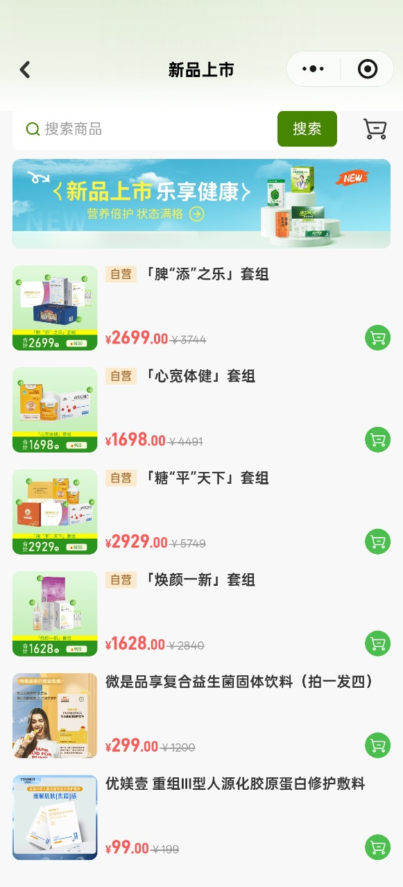
| 元素 | 说明 | 交互/跳转 |
|---|---|---|
| 顶部导航 | 返回按钮 + 标题"新品上市" + 更多操作 | 返回首页；更多操作按App全局规范 |
| 搜索框 | "搜索商品" + 搜索按钮 | 跳转搜索页（已有需求） |
| 购物车 | 购物车图标 | 跳转购物车页（已有需求） |
| 专区Banner | "新品上市 乐享健康" 运营图 | 点击是否跳转待确认；暂定仅展示 |
| 商品列表 | 套组（脾添之乐/心宽体健/糖平天下/焕颜一新）+ 单品（益生菌/修护敷料） | 点击商品卡片跳转商品详情；点击加购按钮触发加购（加购逻辑由商品/购物车模块处理） |
| 价格展示 | 当前价 + 划线价 | 仅展示 |
| 元素 | 说明 | 交互/跳转 |
|---|---|---|
| 顶部宣传区 | "深耕健康生活领域 关注微生态平衡" 主题图 | 仅展示 |
| 主题卡片1 | 肠道健康是身体健康的基石 / 关注肠道，从日常饮食开始 | 点击"点击进入"跳转该主题商品列表/专题页（⚠️ 待确认 @产品负责人：具体跳转目标与参数） |
| 主题卡片2 | 均衡营养、适度运动、规律作息 / 助力身体维持良好状态 | 同主题卡片1 |
| 主题卡片3 | 关注身体信号 主动掌握健康主动权 | 同主题卡片1 |
| 主题卡片4 | 从合理膳食入手 为身体打下扎实基础 | 同主题卡片1 |
| 底部提示 | "没有更多了" | 仅展示 |
⚠️ 待确认 @产品负责人：健康生活页 4 个主题卡片的"点击进入"分别跳转到哪个页面？是跳转到同一套商品列表页按不同筛选条件展示，还是 4 个独立专题页？
| 元素 | 说明 | 交互/跳转 |
|---|---|---|
| 顶部导航 | 返回按钮 + 标题"自营专区" | 返回首页 |
| 搜索框 | "搜索商品" + 搜索按钮 | 跳转搜索页（已有需求） |
| 购物车 | 购物车图标 | 跳转购物车页（已有需求） |
| 专区Banner | "进阶套餐 健康搭档" 运营图 | 点击是否跳转待确认；暂定仅展示 |
| 商品列表 | 带"自营"标签的商品列表 | 点击商品卡片跳转商品详情；点击加购按钮触发加购 |
| 元素 | 说明 | 交互/跳转 |
|---|---|---|
| 顶部导航 | 返回按钮 + 标题"微生态专区" | 返回首页 |
| 搜索框 | "搜索商品" + 搜索按钮 | 跳转搜索页（已有需求） |
| 购物车 | 购物车图标 | 跳转购物车页（已有需求） |
| 专区Banner | "微生态 守护您的健康微世界" 运营图 | 点击是否跳转待确认；暂定仅展示 |
| 商品列表 | 微生态相关商品列表 | 点击商品卡片跳转商品详情；点击加购按钮触发加购 |
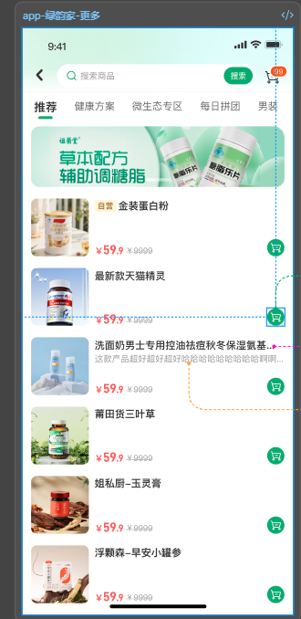
| 元素 | 说明 | 交互/跳转 |
|---|---|---|
| 顶部导航 | 返回按钮 | 返回首页 |
| 搜索框 | "搜索商品" + 搜索按钮 | 跳转搜索页（已有需求） |
| 购物车 | 购物车图标（含数量角标） | 跳转购物车页（已有需求） |
| 分类Tab栏 | 横向滚动分类标签，沿用现有分栏：推荐、图书、厨具、个人护理、膳食营养补充食品、美妆等（由后端返回） | 点击切换下方商品列表；默认选中首个 tab（如"推荐"） |
| 商品列表 | 当前选中 tab 对应的商品列表 | 点击商品卡片跳转商品详情；点击加购按钮触发加购 |
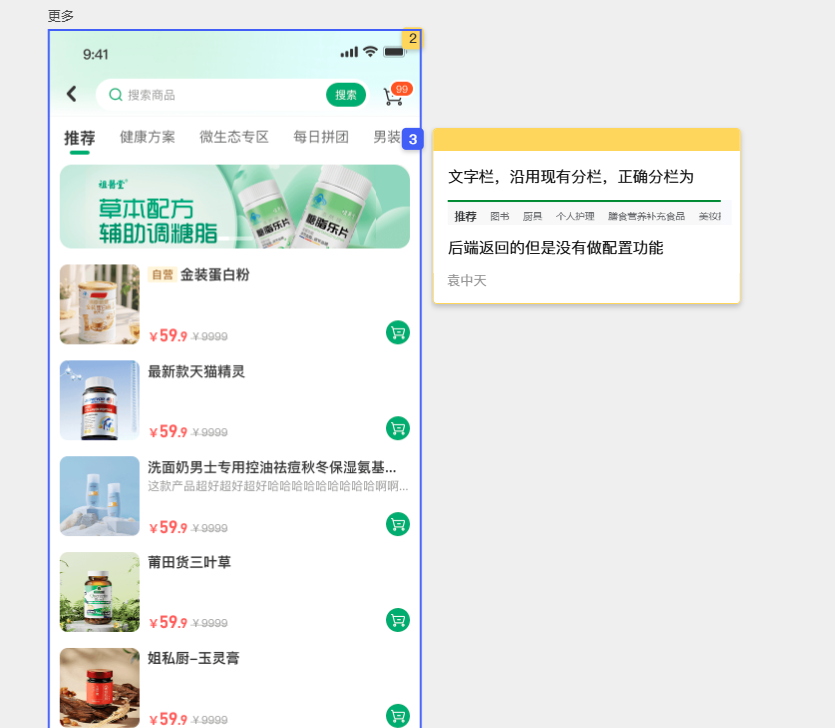
现状说明："更多"页分类 tab 沿用现有分栏，由后端返回，为写死展示；本期分类导航整体不做后台配置改造。
⚠️ 待确认 @产品负责人："更多"页分类 tab 切换时，是本地筛选商品还是跳转不同页面？当前截图显示为同一页面内切换 tab 展示不同商品列表。
| 元素 | 说明 | 交互/跳转 |
|---|---|---|
| 顶部宣传区 | "每日活动 DAILY ACTIVITIES" 主题图 | 仅展示 |
| 活动卡片 | 多个活动项，如：四季好礼、好礼买送、买送福利等 | 点击"立即前往"按钮跳转对应活动详情/商品列表/专题页（⚠️ 待确认 @产品负责人：具体跳转目标与参数） |
| 活动商品 | 卡片内展示活动商品图与名称 | 是否可点击跳转商品详情待确认 |
| 活动时间 | 展示活动起止时间，如"活动时间：2026-08-01 00:00-2026-08-31 23:59" | 仅展示；用于提示用户活动有效期 |
| 热度值 | 卡片右上角展示热度数字（如 5278、4308） | 仅展示；热度计算规则 ⚠️ 待确认 @产品负责人 |
⚠️ 待确认 @产品负责人：每日活动页每张卡片的"立即前往"跳转目标是什么？是跳到活动商品聚合页、商品详情页，还是活动规则/H5页？
| 元素 | 说明 | 交互/跳转 |
|---|---|---|
| 顶部导航 | 返回按钮 + 标题"专题推荐" | 返回首页 |
| 搜索框 | "搜索商品" + 搜索按钮 | 跳转搜索页（已有需求） |
| 购物车 | 购物车图标 | 跳转购物车页（已有需求） |
| 专区Banner | "精品推荐 品质之选，您的优选" 运营图 | 点击是否跳转待确认；暂定仅展示 |
| 商品列表 | 双列商品卡片，带"自营"标签、当前价、划线价、加购按钮 | 点击商品卡片跳转商品详情；点击加购按钮触发加购 |
说明：截图顶部标题为"专题推荐"，Banner 文案为"精品推荐"，因此该落地页可理解为"精品推荐"对应"专题推荐"页面；后台配置时跳转参数可统一映射到同一专区ID。
| 元素 | 说明 | 交互/跳转 |
|---|---|---|
| 顶部导航 | 返回按钮 + 标题"惠民补贴" + 更多操作 | 返回首页；更多操作按App全局规范 |
| 专区Banner | "惠民补贴专区" 主题图，含文案"本专区内所有套餐下单即赠送：10万积分 + 水卡一张"及"积分赠送规则 每笔订单完结后，一次性赠送10万积分" | 点击是否跳转待确认；暂定仅展示 |
| 商品列表 | 双列商品卡片，展示套组商品（如「心宽体健」套组、「焕颜一新」套组、「糖"平"天下」套组、「脾"添"之乐」套组） | 点击商品卡片跳转商品详情；点击加购按钮触发加购 |
| 数量标签 | 商品图右上角展示数量角标（如 x3、x2、x4），表示套组内商品件数或组合数量 | 仅展示；具体含义 ⚠️ 待确认 @产品负责人 |
| 价格区 | "合计 ¥1698 得" 黄色高亮区 + "自营"标签 + 当前价 + 划线价 | 仅展示；"合计/得"计算规则 ⚠️ 待确认 @产品负责人 |
| 问题解答 | 页面右下角悬浮"问题解答"按钮 | 点击跳转常见问题/客服页面（⚠️ 待确认 @产品负责人：具体跳转目标） |
⚠️ 待确认 @产品负责人：惠民补贴页"问题解答"按钮点击后跳转至 FAQ 页面、客服会话页，还是其他页面？
需求影响范围：新增"超级品牌"营销专区，展示重点品牌商品大图，强化品牌心智与信任感；数据来源于后台"专题管理"中专题类型=超级品牌的专题，前端取该类型下的专题关联商品按排序展示，点击跳转超级品牌商品列表页。
涉及终端明细：绿韵家App（iOS/Android双端）；运营后台（专题管理，详见 4.2.3）。
营销专区统一数据规则（评审结论）：首页营销专区保留超级品牌 / 超级爆款 / 限时特惠 三个固定板块位置。每个专题类型（超级品牌 / 超级爆款 / 限时特惠）在后台仅允许存在 1 个专题（运营若要新建同类型新专题，必须先删除/下架旧专题）。每个板块取该类型的唯一专题，卡片展示：专题名称 + 专题标签（后台专题管理新增字段，≤5 字，仅专题类型=超级品牌/超级爆款/限时特惠时必填，常规专题可选填）+ 入口图 / 当前价 / 划线价（入口图/价格取该专题下最新加入商品的字段）。
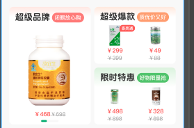
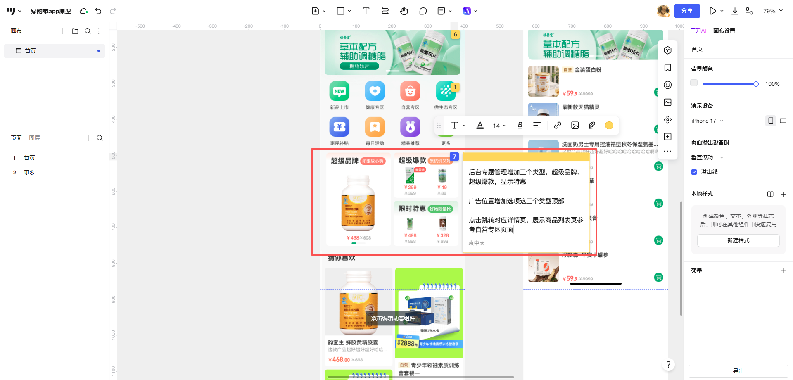
需求标注说明：后台"专题管理"增加"专题类型"字段，选项为：超级品牌、超级爆款、限时特惠；首页三个板块分别取对应专题类型的数据展示；点击跳转到对应商品列表页，展示该专题里面的商品（参考自营专区页面）。
界面与展示规则
业务逻辑与边界条件
| 字段名称 | 需求说明 | 备注 |
|---|---|---|
| 模块标题 | 固定"超级品牌" | 写死 |
| 模块标签 | 固定"闭眼放心购" | 写死 |
| 专题ID | 后台"专题管理"生成的唯一标识 | 用于跳转传参 |
| 专题名称 | 取模块标题"超级品牌" | 关联后台需求：超级品牌/超级爆款/限时特惠这三个类型的专题不需要填这几个字段 |
| 专题主图 / 首页推荐图 | 取当前这个专栏里最新的商品管理的最新的商品，前几个商品头图 | 关联后台需求：这三个类型的专题不需要填这几个字段 |
| 当前价 | 取当前这个专栏里最新的商品管理的最新的商品，前几个商品的当前售价 | 关联后台需求：这三个类型的专题不需要填这几个字段 |
| 划线价 | 取当前这个专栏里最新的商品管理的最新的商品，前几个商品的划线价 | 关联后台需求：这三个类型的专题不需要填这几个字段 |
| 专题标签 | 专题辅助说明文案，首页卡片展示在专题名称下方，≤5 字 | ⚠️ 本期新增字段，后台专题管理维护；仅专题类型=超级品牌/超级爆款/限时特惠时必填，常规专题可选填 |
| 功能名称 | 功能说明 | 备注 |
|---|---|---|
| 专题卡片 | 点击跳转超级品牌商品列表页 | 展示该专题关联的商品 |
topic_id=该专题ID）跳转超级品牌商品列表页；topic_id=该专题ID；列表页顶部标题为"超级品牌"，包含搜索框、Banner 位与商品卡片列表，展示该专题关联的商品（即该专题里面的商品），按设计图展示。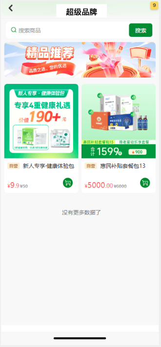
| 字段名称 | 取值逻辑说明 |
|---|---|
| 超级品牌专题 | 调《专题管理-专题列表接口》获取，条件：专题类型=超级品牌、状态=上架、在有效期内；同类型仅允许存在 1 个，返回该唯一专题 |
| 专题信息 | 取《专题管理表》专题类型、排序、状态、关联商品列表；列表页展示该专题关联的商品 |
| 卡片展示字段 | 专题名称、入口图、当前价、划线价均取专题内最新加入商品的对应字段；后台创建该类型专题时无需填写专题名称、专题banner、首页推荐图、专题价 |
需求影响范围：新增"超级爆款"营销专区，以2列小卡片形式展示高性价比爆款专题；数据来源于后台"专题管理"中专题类型=超级爆款的专题，前端取该类型下的专题关联商品按排序展示，点击跳转超级爆款商品列表页。
涉及终端明细：绿韵家App（iOS/Android双端）；运营后台（专题管理，详见 4.2.3）。
界面与展示规则
业务逻辑与边界条件
| 字段名称 | 需求说明 | 备注 |
|---|---|---|
| 模块标题 | 固定"超级爆款" | 写死 |
| 模块标签 | 固定"质优价又好" | 写死 |
| 专题ID | 后台"专题管理"生成的唯一标识 | 用于跳转传参 |
| 专题名称 | 取模块标题"超级爆款" | 关联后台需求：超级品牌/超级爆款/限时特惠这三个类型的专题不需要填这几个字段 |
| 专题主图 / 首页推荐图 | 取当前这个专栏里最新的商品管理的最新的商品，前几个商品头图 | 关联后台需求：这三个类型的专题不需要填这几个字段 |
| 当前价 | 取当前这个专栏里最新的商品管理的最新的商品，前几个商品的当前售价 | 关联后台需求：这三个类型的专题不需要填这几个字段 |
| 划线价 | 取当前这个专栏里最新的商品管理的最新的商品，前几个商品的划线价 | 关联后台需求：这三个类型的专题不需要填这几个字段 |
| 专题标签 | 专题辅助说明文案，首页卡片展示在专题名称下方，≤5 字 | ⚠️ 本期新增字段，后台专题管理维护；仅专题类型=超级品牌/超级爆款/限时特惠时必填，常规专题可选填 |
topic_id=该专题ID；列表页顶部标题为"超级爆款"，包含搜索框、Banner 位与商品卡片列表，展示该专题关联的商品（即该专题里面的商品），按设计图展示。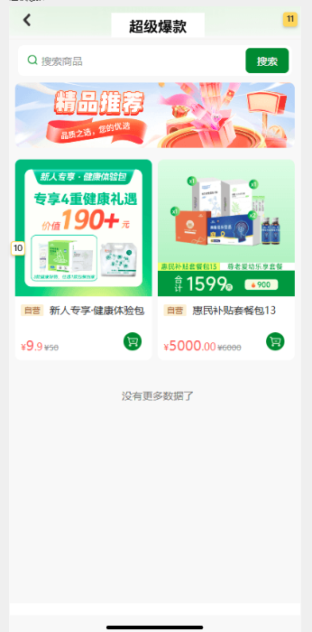
| 字段名称 | 取值逻辑说明 |
|---|---|
| 超级爆款专题 | 调《专题管理-专题列表接口》获取，条件：专题类型=超级爆款、状态=上架、在有效期内；同类型仅允许存在 1 个，返回该唯一专题 |
| 列表页商品 | 取该专题关联的商品，按商品排序/修改时间倒序展示 |
| 卡片展示字段 | 专题名称、入口图、当前价、划线价均取专题内最新加入商品的对应字段；后台创建该类型专题时无需填写专题名称、专题banner、首页推荐图、专题价 |
需求影响范围：新增"限时特惠"营销专区，展示限时优惠专题，营造紧迫感；数据来源于后台"专题管理"中专题类型=限时特惠的专题，前端取该类型下的专题关联商品按排序展示，点击跳转限时特惠商品列表页。
涉及终端明细：绿韵家App（iOS/Android双端）；运营后台（专题管理，详见 4.2.3）。
界面与展示规则
业务逻辑与边界条件
| 字段名称 | 需求说明 | 备注 |
|---|---|---|
| 模块标题 | 固定"限时特惠" | 写死 |
| 模块标签 | 固定"好物限量抢" | 写死 |
| 专题ID | 后台"专题管理"生成的唯一标识 | 用于跳转传参 |
| 专题名称 | 取模块标题"限时特惠" | 关联后台需求：超级品牌/超级爆款/限时特惠这三个类型的专题不需要填这几个字段 |
| 专题主图 / 首页推荐图 | 取当前这个专栏里最新的商品管理的最新的商品，前几个商品头图 | 关联后台需求：这三个类型的专题不需要填这几个字段 |
| 当前价 | 取当前这个专栏里最新的商品管理的最新的商品，前几个商品的当前售价 | 关联后台需求：这三个类型的专题不需要填这几个字段 |
| 划线价 | 取当前这个专栏里最新的商品管理的最新的商品，前几个商品的划线价 | 关联后台需求：这三个类型的专题不需要填这几个字段 |
| 专题标签 | 专题辅助说明文案，首页卡片展示在专题名称下方，≤5 字 | ⚠️ 本期新增字段，后台专题管理维护；仅专题类型=超级品牌/超级爆款/限时特惠时必填，常规专题可选填 |
| 活动时间 | 取专题生效时间（开始/结束时间） | 超出结束时间后自动下架 |
topic_id=该专题ID；列表页顶部标题为"限时特惠"，包含搜索框、Banner 位与商品卡片列表，展示该专题关联的商品（即该专题里面的商品），按设计图展示。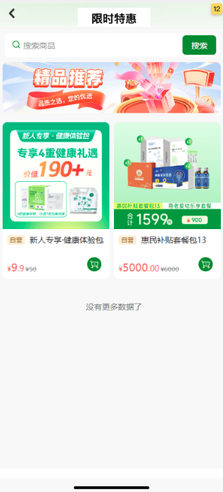
| 字段名称 | 取值逻辑说明 |
|---|---|
| 限时特惠专题 | 调《专题管理-专题列表接口》获取，条件：专题类型=限时特惠、状态=上架、在有效期内；同类型仅允许存在 1 个，返回该唯一专题 |
| 列表页商品 | 取该专题关联的商品，按商品排序/修改时间倒序展示 |
| 卡片展示字段 | 专题名称、入口图、当前价、划线价均取专题内最新加入商品的对应字段；后台创建该类型专题时无需填写专题名称、专题banner、首页推荐图、专题价 |
需求影响范围：新增"猜你喜欢"个性化商品推荐流。本期在不改动后台商品管理的前提下，复用现有商品字段（运营类型、商品排序、商品标签、修改时间）实现分层推荐与排序。
涉及终端明细：绿韵家App（iOS/Android双端）；推荐服务/算法侧。
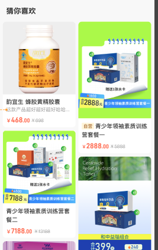
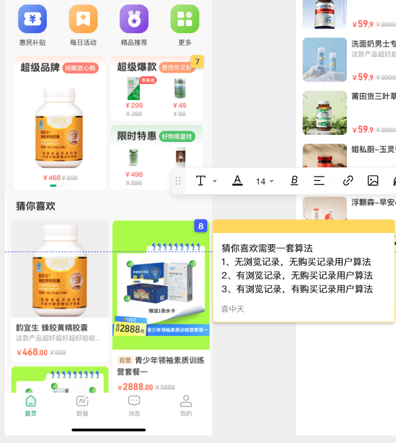
界面与展示规则
业务逻辑与边界条件
本推荐方案不新增后台商品字段，完全复用商品管理现有字段。商品先按"商品分层"获得基础分（基础分默认值见下表，可在后台推荐策略配置中调整，见 4.2.4），作为统一打分的起点；再叠加用户行为加分（见 4.1.7.4）。后台商品字段截图见附录 / 4.1.7.9。
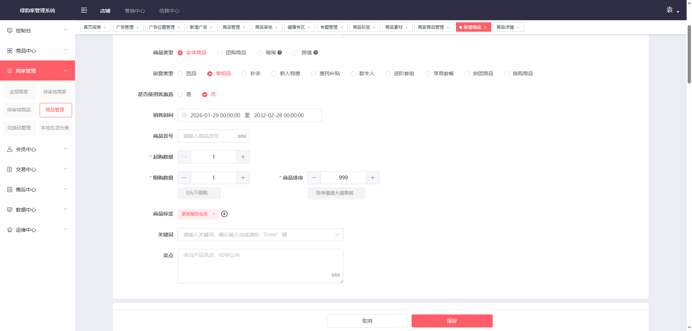
| 分层 | 判定规则 | 说明 | 基础分（默认） |
|---|---|---|---|
| 营销品（第一层） | 运营类型 ∈ {秒杀, 新人特惠, 惠民补贴, 拼团商品, 换购商品, 进阶套组, 字商套餐, 数字人} | 带营销属性的商品优先曝光 | 100（⚠️ 待确认 @产品/算法：默认权重，后台可配） |
| 利润品（第二层） | 运营类型 = 常规品，或商品标签包含"利润品" | 日常销售主力商品；"利润品"为商品标签，可在后台标签管理中增删维护。本期兜底：未维护"利润品"标签时，按"运营类型 = 常规品"判定利润品 | 60（⚠️ 待确认 @产品/算法：默认权重，后台可配） |
| 其他（第三层） | 不满足以上两层的商品 | 作为推荐池补充 | 20（⚠️ 待确认 @产品/算法：默认权重，后台可配） |
已确认：利润品判定 =「运营类型 = 常规品」或「商品标签包含"利润品"」二者满足其一；"利润品"标签可在后台标签管理中增删维护。本期兜底策略为：未维护"利润品"标签时，按"运营类型 = 常规品"判定利润品。
整体重构说明（评审结论）：本期取消"按用户状态分三策略"的旧模型，改为统一打分排序模型——每个候选商品先按"商品分层"获得基础分，再叠加当前用户对该商品的行为加分（加入购物车 / 下单 / 收藏 / 三天内浏览），按综合得分降序排列；商品排序值不再作为主排序键，仅用于同分二次排序。
综合得分公式
综合得分 = 基础分(按商品分层) + Σ 行为加分 行为加分（命中即加，可叠加；默认值 ⚠️ 待确认 @产品/算法）： + 加入购物车 : +30 + 下单/已购 : +50 + 收藏 : +25 + 三天内浏览 : +15
排序规则（唯一排序链路）
行为加分判定（per 用户 × per 商品）
已确认 / 待确认：统一打分模型与"商品排序降级为同分排序"已与产品评审确认；各权重为默认值，⚠️ 待确认 @产品/算法 后可在后台推荐策略配置中调整（见 4.2.4）。原"近 7 天已购过滤"在统一打分模型下不再需要（已购本身已加分，无需单独过滤）。
排序伪代码
// 1. 基础分（按商品分层，后台可配）
base_score = { "营销品": 100, "利润品": 60, "其他": 20 } // ⚠️ 待确认默认权重
// 2. 行为加分（当前用户对该商品命中即加，可叠加；⚠️ 待确认默认权重）
behavior_score = 0
if 商品 in 用户购物车: behavior_score += 30
if 商品 近30天有下单/已购: behavior_score += 50
if 商品 被用户收藏: behavior_score += 25
if 商品 近3天被用户浏览: behavior_score += 15
// 3. 综合得分（越大越靠前）
total_score = base_score + behavior_score
// 4. 排序：综合得分 desc → 商品排序 desc → 修改时间 desc
数据演练示例（统一打分）
推荐池含 5 个商品，分层基础分如上；当前登录用户行为命中：G002 已加购、G004 近 3 天浏览过、G005 近 30 天已下单。
| 商品ID | 商品名称 | 运营类型 | 分层 | 基础分 | 行为加分 | 综合得分 | 商品排序 | 最终排序 |
|---|---|---|---|---|---|---|---|---|
| G001 | 蜂胶黄精胶囊 | 常规品 | 利润品 | 60 | 0 | 60 | 999 | 5 |
| G002 | 新人特惠维C | 新人特惠 | 营销品 | 100 | +30（加购） | 130 | 850 | 1 |
| G003 | 惠民补贴水卡套装 | 惠民补贴 | 营销品 | 100 | 0 | 100 | 850 | 3 |
| G004 | 常规益生菌 | 常规品 | 利润品 | 60 | +15（三天内浏览） | 75 | 500 | 4 |
| G005 | 普通日用品 | 常规品 | 利润品 | 60 | +50（已下单） | 110 | 100 | 2 |
说明：综合得分降序为 G002(130) > G005(110) > G003(100) > G004(75) > G001(60)。可见 G005 虽商品排序最低（100），但已下单 +50 使其综合得分 110 > G004 的 75，排在 G004 之前——体现"分数高排前、商品排序仅同分排序"。若两商品综合得分相同（如两个营销品均无行为加分，基础分均为 100），则按商品排序 desc 排序（G003 排序 850 与另一同分商品比较）。
商品ID 与 推荐算法版本 / 推荐位序号（用于归因与埋点）。| 字段名称 | 取值逻辑说明 |
|---|---|
| 推荐商品列表 | 调《推荐服务-首页猜你喜欢接口》获取，输入用户ID/设备ID、分页参数、用户行为标签，返回推荐商品列表 |
| 商品信息 | 取《商品主数据表》对应字段（名称、主图、销售价、市场价、运营类型、商品排序、商品标签、修改时间等） |
| 用户行为 | 取《用户行为日志》或《用户兴趣标签表》：浏览记录、购买记录、商品标签偏好 |
本期推荐算法复用的后台字段如下图所示，不新增商品管理字段。
| 字段名称 | 在推荐算法中的作用 | 取值示例 |
|---|---|---|
| 运营类型 | 判定商品分层：营销品 / 利润品 / 其他 | 常规品、秒杀、新人特惠、惠民补贴、拼团商品、换购商品、进阶套组、字商套餐、数字人 |
| 商品排序 | 同分层内主要排序依据，0–999，越大越靠前 | 999 |
| 商品标签 | 用于商品分层判定（利润品），并作为用户行为加分的关联维度（加购/下单/收藏/三天内浏览均按"当前用户对该商品"命中即加分） | 享受生活、肠道健康、利润品等 |
| 修改时间 | 同商品排序时的倒序依据 | 2026-08-14 10:00:00 |
| 销售时间 | 过滤未开始/已结束销售的商品 | 2026-01-29 00:00:00 至 2032-02-28 00:00:00 |
| 起购数量 / 限购数量 | 当前版本不参与推荐排序，仅用于商详页展示 | 1 |
需求影响范围：为支撑本期首页模块可运营，需在运营后台新增/扩展配置能力，覆盖轮播广告配置（在现有"广告管理"中新增"轮播广告"类型）、专题管理（超级品牌/超级爆款/限时特惠）、猜你喜欢推荐策略配置。后台页面形态参考现有"广告管理"页面与"专题管理"页面：左侧菜单导航 + 顶部筛选区 + 列表展示 + 操作列（编辑/删除）+ 新增按钮，详见 4.2.0 / 4.2.3.0 后台页面参考原型。
涉及终端明细：运营后台（Web）。
本期新增/扩展的后台配置模块，在页面布局与交互上统一参考绿韵家管理系统现有"广告管理"页面（首页投放 → 广告管理）与"专题管理"页面（商品中心 → 专题管理），以降低用户学习成本并保持后台体验一致性。下图为现有广告管理列表页参考；轮播广告配置直接复用/扩展现有"编辑广告"页面（新增"轮播广告"类型），详见 4.2.1；专题管理复用/扩展现有"专题管理"页面（新增"专题类型"字段），详见 4.2.3。
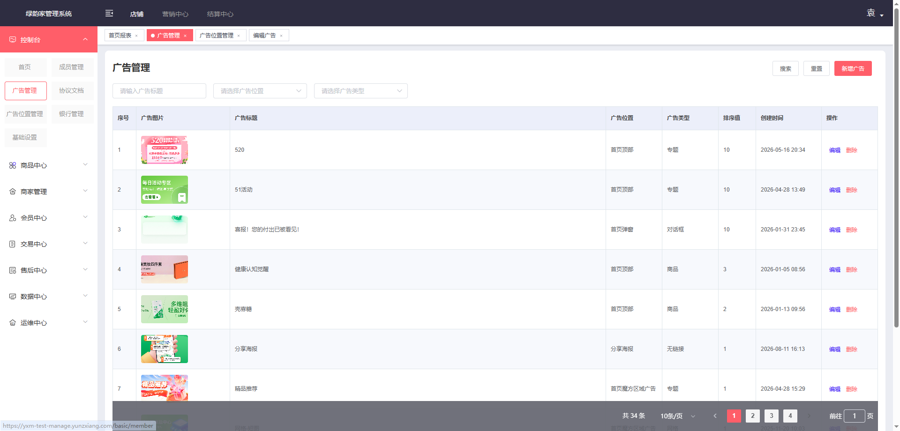
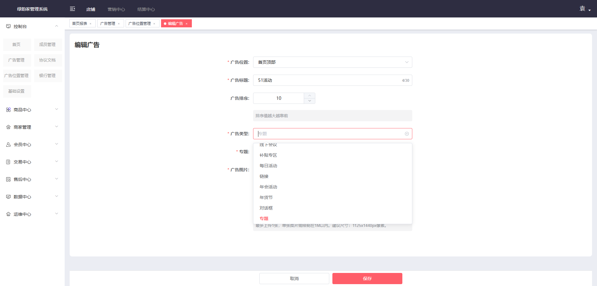
| 区域 | 参考说明 | 本期复用建议 |
|---|---|---|
| 左侧菜单 | 控制台 / 首页 / 成员管理 / 协议文档 / 职位管理 / 银行管理 / 基础设置 / 商品中心 / 商家管理 / 会员中心 / 交易中心 / 售后中心 / 数据中心 / 运维中心 | 轮播广告：复用现有"首页投放 → 广告管理"菜单；专题管理：复用现有"商品中心 → 专题管理"菜单；在"首页"或"营销中心"下新增"首页运营配置"子菜单，内含：猜你喜欢策略配置 |
| 面包屑 | 首页投放 / 广告管理 / 广告位置管理 / 编辑广告 | 轮播广告：首页投放 / 广告管理 / 编辑广告；专题管理：商品中心 / 专题管理 / 新增专题 / 编辑专题 |
| 筛选区 | 输入广告标题、选择广告位置、选择广告类型 | 轮播广告：按广告标题、广告位置（首页顶部）、广告类型（轮播广告）筛选专题管理：专题名称、专题类型、创建人 |
| 操作按钮 | 搜索、重置、新增广告 | 搜索、重置、新增配置/新增专题 |
| 列表区 | 序号、广告图片、广告标题、广告位置、广告类型、排序值、创建时间、操作（编辑/删除） | 轮播广告：直接复用现有广告列表字段；专题管理：专题编号、专题信息、专题类型、商品数、上架商品数、状态、推荐、排序、创建人、创建时间、操作（编辑/商品管理/下架/删除） |
| 分页 | 共 N 条、每页条数、页码、前往 | 统一复用现有分页组件，默认 10 条/页 |
⚠️ 待确认 @产品负责人 / @研发负责人：新增配置模块在左侧菜单的入口位置（放在"首页"下还是"营销中心"下？），以及菜单命名（如"首页运营配置"是否合适）。轮播广告是否直接复用现有"广告管理"菜单而不新增子菜单？
需求说明：在现有"广告管理"中新增一个广告类型"轮播广告"，用于配置首页顶部轮播 Banner。运营创建广告时选择广告位置=首页顶部、广告类型=轮播广告，上传 1 张图片并设置排序、跳转类型与参数。
| 字段名称 | 需求说明 | 备注 |
|---|---|---|
| 广告位置 | 枚举：首页顶部、并可扩展至其他广告位置 | 允许扩展至其他位置（已确认） |
| 广告标题 | 后台识别用，前端不一定展示 | 必填，长度限制沿用现有广告标题规则 |
| 广告排序 | 决定轮播顺序，整数，值越小越靠前 | 必填 |
| 广告类型 | 本期新增"轮播广告" | 下拉选择 |
| 跳转类型 | 同现有广告：专题 / 链接 / 每日活动 / 年货节 / 专题 等 | 根据广告类型联动 |
| 跳转参数 | 对应跳转类型的目标ID或URL | — |
| 广告图片 | 只能上传 1 张 | 限制 1M 以内、建议尺寸 1125×1440px（沿用现有广告图片规则） |
| 生效时间 | 开始时间 / 结束时间 | 复用现有广告字段（已确认） |
| 状态 | 上线 / 下线 | 仅上线且有效期内展示 |
已确认（B3/B4/B5）：
1）"轮播广告"类型允许扩展至其他广告位置，不限定"首页顶部"。
2）图片限制为 1M 以内、建议尺寸 1125×1440px，沿用现有广告图片规则。
3）支持配置单张轮播图的生效时间，复用现有广告生效时间字段（开始/结束时间、上线/下线状态）。
需求说明：首页分类导航的 8 个入口为客户端写死展示，无后台配置能力。入口名称、图标、顺序、跳转目标均不可在运营后台增删改或调整，如需变更须发版。因此本期不新增分类导航后台配置模块；4.2 其余后台配置（轮播广告配置、专题管理、猜你喜欢策略配置）正常建设。
需求说明：运营后台新增/扩展"专题管理"模块，用于统一管理首页三大营销专区（超级品牌、超级爆款、限时特惠）的专题。创建/编辑专题时，新增"专题类型"字段，选项为：超级品牌、超级爆款、限时特惠。首页 App 端根据专题类型分别展示对应板块的专题卡片；点击卡片跳转专题商品列表页，展示该专题下的商品（即该专题里面的商品）。
"专题管理"页面参考现有后台"商品中心 → 专题管理"列表页与"新增专题"弹窗（见下图），在现有功能基础上新增"专题类型"字段。
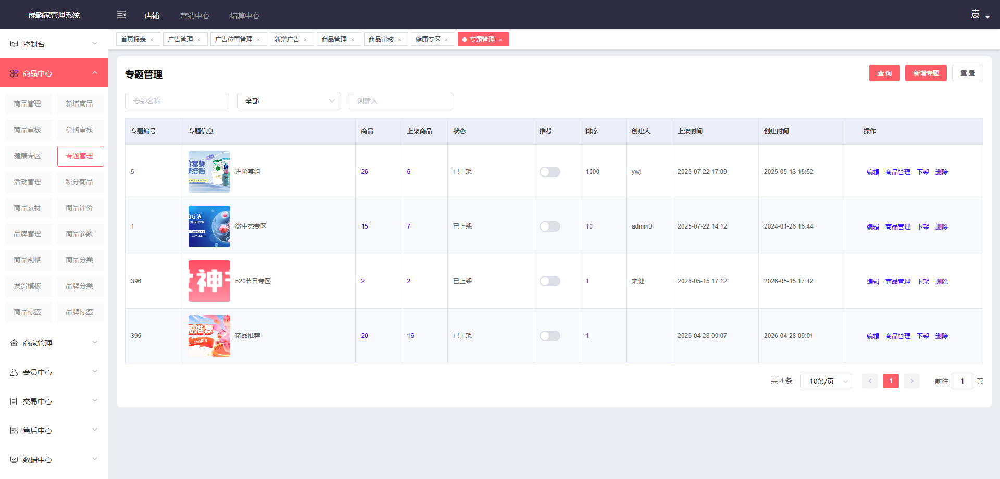
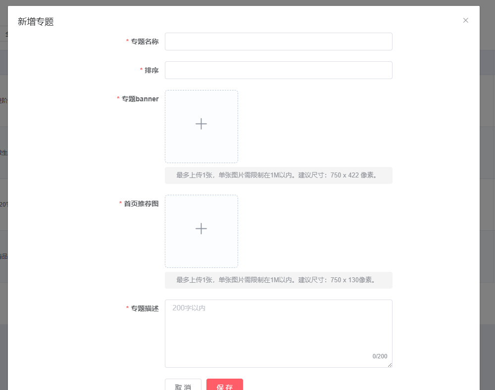
| 区域 | 参考说明 | 本期复用/调整建议 |
|---|---|---|
| 左侧菜单 | 商品中心 / 新增商品 / 价格审核 / 商品审核 / 专题管理 / 积分商品 / 活动管理 … | 复用"商品中心 → 专题管理"菜单；若当前无专题管理，则在商品中心下新增 |
| 面包屑 | 商品中心 / 专题管理 | 商品中心 / 专题管理 / 新增专题 / 编辑专题 |
| 筛选区 | 专题名称、专题信息（下拉：全部）、创建人 | 增加"专题类型"筛选：全部 / 超级品牌 / 超级爆款 / 限时特惠 |
| 列表区 | 专题编号、专题信息、商品数、上架商品数、状态、推荐、排序、创建人、上架时间、创建时间、操作 | 列表中增加/展示"专题类型"字段；操作含：编辑、商品管理、下架、删除 |
| 操作按钮 | 查询、新增专题、重置 | 复用现有按钮 |
| 新增/编辑弹窗 | 专题名称、排序、专题banner、首页推荐图、专题描述 | 新增"专题类型"必填字段；其他字段复用现有专题字段 |
| 字段名称 | 需求说明 | 备注 |
|---|---|---|
| 专题编号 | 系统自动生成 | 唯一标识 |
| 专题名称 | 后台识别与前端展示 | 常规专题必填；超级品牌/超级爆款/限时特惠类型无需填写，前端取模块标题 |
| 排序 | 决定同专题类型下的展示顺序 | 必填，整数，值越小越靠前 |
| 专题类型 | 必填，选项：超级品牌 / 超级爆款 / 限时特惠 | 本期新增字段 |
| 专题banner | 专题详情页顶部banner | 常规专题最多1张；超级品牌/超级爆款/限时特惠类型无需上传 |
| 首页推荐图 | 首页营销专区入口图 | 常规专题最多1张；超级品牌/超级爆款/限时特惠类型无需上传 |
| 专题描述 | 专题简介 | 200字以内，可选 |
| 专题标签 | 首页营销专区专题卡片辅助文案 | ⚠️ 本期新增字段，≤5字；仅专题类型=超级品牌/超级爆款/限时特惠时必填，常规专题可选填 |
| 关联商品 | 专题详情页展示的商品列表 | 从商品库选择，支持排序与上下架；三个首页营销类型必须关联至少1个商品用于首页卡片取数 |
| 状态 | 上架 / 下架 | 仅上架且在有效期内展示 |
| 推荐 | 是否推荐 | 沿用现有排序逻辑 |
| 生效时间 | 活动开始/结束时间 | 限时特惠等时间敏感专题使用 |
| 创建人 / 创建时间 | 运营操作审计 | 复用现有字段 |
| 专题类型 | 首页板块 | 默认展示位置 | 默认展示数量 |
|---|---|---|---|
| 超级品牌 | 超级品牌区 | 分类导航下方左侧 | 每板块取该类型唯一专题 1 个（同类型仅允许存在 1 个） |
| 超级爆款 | 超级爆款区 | 分类导航下方右侧 | 每板块取该类型唯一专题 1 个（同类型仅允许存在 1 个） |
| 限时特惠 | 限时特惠区 | 超级品牌/超级爆款下方 | 每板块取该类型唯一专题 1 个（同类型仅允许存在 1 个） |
说明：后台"专题管理"中创建专题时选择对应专题类型，App 端首页各板块即按专题类型过滤并展示。
需求说明：本期推荐算法改为统一打分模型（见 4.1.7.4），后台需为运营/算法提供基础分权重、行为加分权重、同分排序与兜底策略的配置能力，便于线上调优；商品主数据字段不新增。
| 字段名称 | 需求说明 | 默认值 | 备注 |
|---|---|---|---|
| 算法生效开关 | 是否启用猜你喜欢推荐服务 | 开 | 关闭时前端可隐藏该区域 |
| 营销品基础分 | 营销品分层基础分 | 100 | ⚠️ 待确认 @产品/算法，后台可配 |
| 利润品基础分 | 利润品分层基础分 | 60 | ⚠️ 待确认，后台可配 |
| 其他基础分 | 其他分层基础分 | 20 | ⚠️ 待确认，后台可配 |
| 加购加分 | 商品在用户购物车中的加分 | 30 | ⚠️ 待确认，后台可配 |
| 下单加分 | 商品近 30 天被用户下单的加分（提交订单即计，含未支付） | 50 | 已确认口径，后台可配 |
| 收藏加分 | 商品被用户收藏的加分 | 25 | ⚠️ 待确认，后台可配 |
| 三天内浏览加分 | 商品近 3 天被用户浏览的加分 | 15 | ⚠️ 待确认，后台可配；窗口固定 3 天 |
| 同分排序 | 综合得分相同时的排序键 | 商品排序 desc → 修改时间 desc | 商品排序仅作同分排序 |
| 营销品运营类型 | 判定为营销品的运营类型集合 | 秒杀、新人特惠、惠民补贴、拼团商品、换购商品、进阶套组、字商套餐、数字人 | 已确认固定写死，不可配置 |
| 利润品判定规则 | 按常规品兜底 / 按"利润品"标签 / 二者满足其一 | 二者满足其一（常规品兜底 + 利润品标签） | 已确认 |
本需求埋点事件与属性遵循团队埋点规范。因绿韵家项目暂无独立埋点规范文档，本期先输出涉及事件精简清单，待项目专属埋点规范确认后，替换为规范文档在线链接或内嵌双表。搜索框/购物车的埋点由各自独立需求文档覆盖，不在本期清单内；Banner 轮播区本期纳入范围，其曝光/点击/滑动埋点纳入本期清单。
| 事件英文名 | 事件显示名 | 所属层 | 平台 | 触发场景 | 必含属性 | 备注 |
|---|---|---|---|---|---|---|
| home_page_view | 首页曝光 | 页面 | App | 首页加载完成并曝光 | 页面名称、来源、用户ID | — |
| home_banner_expose | Banner曝光 | 曝光 | App | 轮播图进入可视区域 | 广告ID、排序位置 | — |
| home_banner_click | Banner点击 | 点击 | App | 点击轮播图 | 广告ID、排序位置、跳转类型 | — |
| home_banner_slide | Banner滑动 | 滑动 | App | 手动/自动切换轮播图 | 广告ID、目标位置 | 沿用现有滑动埋点上报规则（已确认） |
| home_categorynav_click | 分类导航点击 | 点击 | App | 点击分类导航入口 | 入口名称/ID、跳转类型、位置 | 跳转类型与 4.1.3 对齐 |
| home_categorynav_expose | 分类导航曝光 | 曝光 | App | 分类导航区进入可视区域 | 各入口名称/ID列表 | — |
| home_zone_click | 首页营销专区点击 | 点击 | App | 点击超级品牌/爆款/特惠专题卡片 | 专区类型、专题ID、位置 | 专区类型：super_brand/super_hot/limited_offer |
| home_zone_expose | 首页营销专区曝光 | 曝光 | App | 营销专区卡片进入可视区域 | 专区类型、专题ID、位置 | — |
| topic_detail_view | 专题详情页曝光 | 页面 | App | 专题详情页加载完成并曝光 | 专题ID、专题类型、来源位置 | — |
| topic_goods_click | 专题详情页商品点击 | 点击 | App | 点击专题详情页内商品卡片 | 专题ID、商品ID、位置 | — |
| home_guesslike_click | 猜你喜欢点击 | 点击 | App | 点击猜你喜欢商品卡片 | 商品ID、位置、推荐策略类型、商品分层、商品排序值、推荐算法版本 | 推荐策略类型：scoring（统一打分模型）；行为维度：cart/order/favorite/browse_3d |
| home_guesslike_expose | 猜你喜欢曝光 | 曝光 | App | 猜你喜欢卡片进入可视区域 | 商品ID、位置、推荐策略类型、商品分层、商品排序值、推荐算法版本 | — |
已确认（B7）：以上事件英文名与属性沿用现有团队埋点规范，不再单独对齐；字段命名保持一致即可。
| # | 事项 | 干系人 | 状态 |
|---|---|---|---|
| B1 | Banner轮播图数量上限；无轮播图时是否隐藏 Banner 区域、分类导航是否上移 | @产品负责人 | 已确认：数量=0 时隐藏 Banner 区域，分类导航区上移填补位置 |
| B2 | Banner自动轮播间隔；单张轮播图时是否自动轮播、是否隐藏指示器 | @产品负责人 / @设计负责人 | 已确认：自动轮播间隔 3 秒；单张图不自动轮播、隐藏指示器 |
| B3 | Banner轮播广告图片大小限制、建议尺寸（后台截图显示"单张图片限制在 1M 以内，建议尺寸 1125×1440px"，需确认是否适用于轮播广告） | @产品负责人 / @设计负责人 | 已确认：限制 1M 以内、建议尺寸 1125×1440px（沿用现有广告图片规则） |
| B4 | "轮播广告"类型是否仅支持"首页顶部"位置，是否允许扩展至其他位置 | @产品负责人 / @研发负责人 | 已确认：允许扩展至其他广告位置（不限定首页顶部） |
| B5 | 轮播广告是否复用现有广告的生效时间、上线/下线状态字段 | @产品负责人 / @研发负责人 | 已确认：复用现有广告的生效时间、上线/下线状态字段 |
| B6 | Banner轮播图点击跳转类型枚举（是否同现有广告：专题/链接/每日活动/年货节等） | @产品负责人 / @研发负责人 | 已确认：复用现有广告跳转类型功能（专题/链接/每日活动/年货节等） |
| B7 | Banner埋点事件（home_banner_expose / home_banner_click / home_banner_slide）命名与属性需与团队埋点规范对齐 | @产品负责人 / @数据负责人 | 已确认：沿用现有埋点规范，不再单独对齐 |
| 1 | 分类导航跳转映射：新品上市/健康生活/自营专区/微生态专区/惠民补贴/每日活动/精品推荐/更多 8 个入口已全部根据落地页截图确认 | @产品负责人 | 已完成 |
| 1-1 | 健康生活落地页 4 个主题卡片（肠道健康/均衡营养/关注身体信号/合理膳食）的"点击进入"分别跳转至哪个页面、携带什么参数 | @产品负责人 | 待确认 |
| 1-2 | "更多"页分类 tab 列表：已确认沿用现有分栏且由后端返回，但当前无配置功能，本期需新增后台配置能力；切换 tab 是本地筛选商品还是跳转不同页面仍待确认 | @产品负责人 | 部分确认 |
| 1-3 | 每日活动页每张卡片的"立即前往"跳转目标（活动商品聚合页/商品详情/活动规则/H5页）及携带参数 | @产品负责人 | 待确认 |
| 1-4 | 每日活动页热度值计算规则 | @产品负责人 | 待确认 |
| 2 | 营销专区（超级品牌/爆款/特惠）由后台"专题管理"统一配置，点击专题卡片跳转专题详情页（商品列表页）；模块标题/标签区仅展示不跳转 | @产品负责人 | 已确认 |
| 3 | 分类导航全部隐藏时是否整体隐藏、下方是否上移 | @产品负责人 | 待确认 |
| 4 | 分类导航入口名称字数上限、图标建议尺寸 | @产品负责人 / @设计负责人 | 待确认 |
| 5 | 营销专区模块标签（"闭眼放心购"/"质优价又好"/"好物限量抢"）固定写死，不由后台配置 | @产品负责人 | 已完成 |
| 6 | 营销专区无数据时的占位策略 | @产品负责人 | 已确认：后台未配置对应专题时该区域整体隐藏（超级品牌/爆款互为扩展占满） |
| 7 | 专题已下架/不在有效期内时在首页是否展示及展示样式 | @产品负责人 | 已确认：已下架/不在有效期内的专题，首页不展示该板块 |
| 8 | 营销专区三个固定板块各取对应专题类型的唯一专题（同类型仅允许存在 1 个），卡片展示"专题名称 + 专题标签（≤5字，仅三个营销类型必填）"；展示数量按设计图（2列小卡片）、不可后台配置 | @产品负责人 | 已确认：同类型专题仅允许存在 1 个（新建需先删旧），每板块取该类型唯一专题；专题标签仅三个营销类型必填≤5字、常规专题可选填；展示数量按设计图、不可配置 |
| 9 | 限时特惠是否需要展示倒计时 | @产品负责人 | 已确认：不展示倒计时，活动时间由专题管理生效时间控制自动下架 |
| T1 | "专题管理"是否复用现有后台"商品中心 → 专题管理"页面，还是新建页面 | @产品负责人 / @研发负责人 | 部分确认（建议复用） |
| T2 | "专题类型"字段是否仅用于首页三个板块，还是允许扩展更多类型 | @产品负责人 / @研发负责人 | 待确认 |
| T3 | 广告位置新增"三个类型顶部" | @产品负责人 / @研发负责人 | 已确认：本期不新增独立广告位置，专题商品列表页顶部 Banner 沿用现有页面模板 |
| T4 | 专题详情页顶部广告类型 | @产品负责人 / @研发负责人 | 已确认：沿用现有页面模板 Banner，不新增广告类型 |
| T5 | 专题卡片上展示的名称/入口图/当前价/划线价均取专题内最新加入商品的对应字段；后台创建超级品牌/超级爆款/限时特惠类型专题时无需填写专题名称/专题banner/首页推荐图/专题价 | @产品负责人 | 已完成 |
| T6 | 专题详情页/商品列表页的商品列表是否支持筛选/排序/搜索 | @产品负责人 | 已确认：沿用现有专题商品列表页（含搜索框），不新增筛选/排序能力 |
| 10 | 猜你喜欢每页数量与分页策略：首屏 10 条、每次加载 10 条 | @产品负责人 | 已完成 |
| 11 | 猜你喜欢商品标签规则（自营/赠送/营销标签等） | @产品负责人 | 待确认 |
| 12 | 猜你喜欢推荐算法方案：评审后重构为统一打分模型——商品按分层给基础分（营销品/利润品/其他），叠加用户行为加分（加购/下单/收藏/三天内浏览），综合得分降序；商品排序仅作同分二次排序（详见 4.1.7.4/4.2.4）；各权重为默认值，需算法侧 review | @算法负责人 / @产品负责人 | 方案已重构，待 review（权重 ⚠️ 待确认） |
| R1 | 营销品运营类型集合是否允许运营在后台增删，还是固定写死 | @产品负责人 | 已完成（固定写死） |
| R2 | 利润品判定：后台是否已维护"利润品"商品标签？若未维护，是否按"运营类型=常规品"兜底 | @产品负责人 / @运营负责人 | 已完成（标签可增删，先用常规品兜底） |
| R3 | 用户浏览/购买行为统计时间窗口默认 30 天是否合理 | @产品负责人 / @算法负责人 | 已完成（30 天 OK） |
| R4 | 购买行为相对浏览行为的权重倍数默认 3 倍是否合理 | @产品负责人 / @算法负责人 | 已完成（3 倍 OK） |
| R5 | 有购买记录用户是否过滤近期已购买商品（不过滤 / 30 天内已购过滤 / 全部过滤） | @产品负责人 | 已变更：统一打分模型下"已购"本身已作为行为加分项，无需单独过滤近期已购；原"过滤近 7 天已购"结论在 V1.15 重构中作废 |
| R6 | 推荐接口超时/失败时的兜底展示策略（展示缓存默认列表 / 展示空态 / 隐藏区域） | @产品负责人 / @研发负责人 | 已完成（展示默认列表） |
| 13 | 分类导航为写死展示，无后台配置需求，故"删除确认/预览/生效机制"等配置项不适用。 | @产品负责人 / @研发负责人 | 不适用 |
| 14 | 后台跳转类型枚举是否完整（是否补充搜索结果页/外部链接等） | @产品负责人 | 待确认 |
| 15 | 后台专题管理：每个专题类型在首页的展示数量上限、专题卡片价格是否允许运营覆盖 | @产品负责人 | 已确认：数量不可配置、价格取商品本身不可覆盖 |
| 16 | 猜你喜欢后台策略配置：PRD 已给出算法生效开关、商品分层基础分、行为加分权重（加购/下单/收藏/三天内浏览）、同分排序、分层规则、兜底策略等字段；A/B 与黑白名单能力待算法侧确认 | @算法负责人 / @产品负责人 | 部分确认（权重 ⚠️ 待确认） |
| 22 | 统一打分模型各权重默认值（基础分 营销品100/利润品60/其他20；加购+30、下单+50、收藏+25、三天内浏览+15）是否合理 | @算法负责人 / @产品负责人 | ⚠️ 待确认（默认值先填，后续可调） |
| 23 | 策略三"下单"口径界定：已支付 / 已完结订单 / 下单未支付，哪些计入"下单加分" | @产品负责人 / @算法负责人 | 已确认：提交订单即计入（含未支付），不论是否支付/完结 |
| 24 | 营销专区"专题标签"字段规则：是否 ≤5 字、是否必填、超长截断还是禁止输入 | @产品负责人 | 已确认：≤5 字；仅专题类型=超级品牌/超级爆款/限时特惠时必填，常规专题可选填；超长禁止输入（前端限制 5 字） |
| 25 | 营销专区三个专题的归属方式：严格按"专题类型"分别归属到对应固定位置（每类型取 1 个），还是跨类型取"第一个+前两个"整体 top3 分配到三个位置 | @产品负责人 | 已确认：每专题类型后台仅允许存在 1 个专题，三个固定板块各取对应类型的唯一专题，不存在跨类型 top3 分配 |
| 17 | 埋点事件命名需与团队埋点规范对齐 | @产品负责人 / @数据负责人 | 待确认 |
| 18 | 首页首屏加载时间目标、接口超时时间、支持系统版本 | @研发负责人 | 待确认 |
| 19 | 首页产品负责人、技术Owner、测试负责人姓名 | @项目负责人 | 待确认 |
| 20 | 各KPI目标值（分类导航点击率、营销专区点击率、猜你喜欢点击率、首页→商详转化率） | @产品负责人 | 待确认 |
| 21 | 首页运营后台：轮播广告配置复用现有"首页投放 → 广告管理"菜单（新增"轮播广告"类型）；专题管理复用现有"商品中心 → 专题管理"菜单（新增"专题类型"字段）；在现有后台中新增"首页运营配置"子菜单（猜你喜欢策略配置），非独立新建系统 | @产品负责人 / @研发负责人 | 部分确认 |
| 截图文件名 | 用途 | 说明 |
|---|---|---|
| prd-assets/home-full.png | 首页完整原型 | 覆盖搜索框、购物车、Banner（本期改造）、分类导航、营销专区、猜你喜欢 |
| prd-assets/home-banner-new.png | 首页Banner轮播区需求标注 | 用于 4.1.2 原型示意；说明后台广告管理新增"轮播广告"类型、限制图片大小、只能上传一张、按排序从小到大展示 |
| prd-assets/category-nav.png | 分类导航区 | 用于 4.1.3 原型示意；本期分类导航写死展示，仅补全跳转逻辑说明 |
| prd-assets/marketing-zones.png | 超级品牌/超级爆款/限时特惠区 | 用于 4.1.4~4.1.6 原型示意 |
| prd-assets/guess-you-like.png | 猜你喜欢区 | 用于 4.1.7 原型示意 |
| prd-assets/nav-xinpinshangshi.jpg | 新品上市落地页 | 用于 4.1.3.4 落地页结构说明 |
| prd-assets/nav-jiankangshenghuo.jpg | 健康生活落地页 | 用于 4.1.3.4 落地页结构说明 |
| prd-assets/nav-ziyingzhuanqu.jpg | 自营专区落地页 | 用于 4.1.3.4 落地页结构说明 |
| prd-assets/nav-weishengtaizhuanqu.jpg | 微生态专区落地页 | 用于 4.1.3.4 落地页结构说明 |
| prd-assets/nav-more.png | 更多落地页 | 用于 4.1.3.4 落地页结构说明 |
| prd-assets/nav-meirihuodong.jpg | 每日活动落地页 | 用于 4.1.3.4 落地页结构说明 |
| prd-assets/nav-jingpintuijian.jpg | 精品推荐落地页 | 用于 4.1.3.4 落地页结构说明 |
| prd-assets/nav-huiminbutie.jpg | 惠民补贴落地页 | 用于 4.1.3.4 落地页结构说明 |
| prd-assets/more-category-note.png | 更多页分类 tab 说明 | 用于 4.1.3.4 更多落地页结构说明，明确 tab 沿用现有分栏（写死） |
| prd-assets/admin-ad-reference.png | 后台广告管理页面参考 | 用于 4.2.0 后台页面参考原型，明确新增配置模块的列表/筛选/操作交互形态 |
| prd-assets/admin-ad-edit.png | 后台广告编辑页参考 | 用于 4.2.0 / 4.2.1，说明轮播广告配置复用现有"编辑广告"页面（新增"轮播广告"类型） |
| prd-assets/app-special-zones.png | 前端三大板块需求标注 | 用于 4.1.4 / 4.1.5 / 4.1.6，说明后台专题管理新增专题类型、点击跳转该专题商品列表页展示该专题里面的商品 |
| prd-assets/admin-topic-list.png | 后台专题管理列表页 | 用于 4.2.3.0，说明专题管理列表字段与交互形态 |
| prd-assets/admin-topic-create.png | 后台新增专题弹窗 | 用于 4.2.3.0 / 4.2.3.2，说明新增专题表单字段及本期新增的"专题类型"字段 |
| prd-assets/guess-you-like-algorithm.png | 猜你喜欢算法需求标注 | 用于 4.1.7.1，说明三类用户推荐策略需求 |
| prd-assets/admin-product-fields.png | 后台商品字段截图 | 用于 4.1.7.3 / 4.1.7.9，说明本期推荐算法复用的现有商品字段（运营类型、商品排序、商品标签、修改时间等） |
| prd-assets/topic-superbrand-list.png | 超级品牌商品列表页 | 用于 4.1.4.6，说明点击超级品牌卡片后跳转的商品列表页样式 |
| prd-assets/topic-superhit-list.png | 超级爆款商品列表页 | 用于 4.1.5.6，说明点击超级爆款卡片后跳转的商品列表页样式 |
| prd-assets/topic-limited-list.png | 限时特惠商品列表页 | 用于 4.1.6.6，说明点击限时特惠卡片后跳转的商品列表页样式 |
截图复用说明：home-full.png 作为首页完整设计稿，在 4.1.1 等小节中被引用以示意整体布局；home-banner-new.png 在 4.1.2 中被引用；marketing-zones.png 与 app-special-zones.png 在 4.1.4、4.1.5、4.1.6 中被引用；category-nav.png 在 4.1.3 中被引用；guess-you-like.png、guess-you-like-algorithm.png 与 admin-product-fields.png 在 4.1.7 中被引用。8 张分类导航落地页截图在 4.1.3.4 中被引用。more-category-note.png 在 4.1.3.4 中被引用；admin-ad-reference.png、admin-ad-edit.png 在 4.2.0 / 4.2.1 中被引用；admin-topic-list.png、admin-topic-create.png 在 4.2.3 中被引用。topic-superbrand-list.png、topic-superhit-list.png、topic-limited-list.png 分别在 4.1.4.6、4.1.5.6、4.1.6.6 中被引用。以上为同一张图片文件的合理复用，非视图缺失或重复截图。